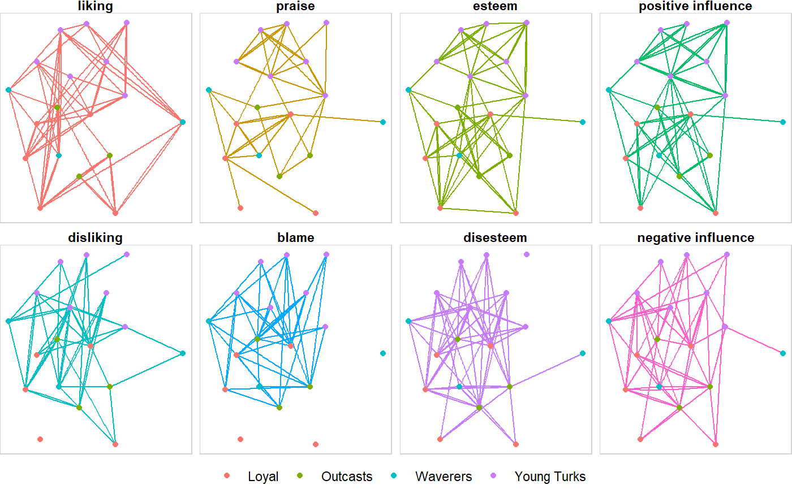

An R toolkit to bridge graph classes and streamline network analytic workflows.
Installation
# Install {devtools} if you haven't already.
# install.packages("devtools")
requireNamespace(devtools)
# Install {snatools} from GitHub.
devtools::install_github("knapply/snatools")
# Load {snatools}.
library(snatools)
bridge_net
The bridge_net object provides an intermediate graph structure that can effectively map data to both igraph and network objects.
sampson_monastery
#> # A directed, multiplex, 1-mode `bridge_net`.
#> # - Contains 0 loops and 0 isolates.
#> $edges # first 3 of 510
#> .ego .alter weight relation time positive_relation
#> <.name> <.name> <dbl> <chr> <int> <lgl>
#> | Romauld Ambrose 2 liking 1 TRUE
#> | Romauld Peter 3 liking 1 TRUE
#> | Romauld Albert 1 liking 1 TRUE
#> $vertices # first 3 of 18
#> .name faction cloisterville status
#> <.name> <chr> <lgl> <chr>
#> | Romauld Waverers FALSE Remained
#> | Bonaventure Loyal TRUE Remained
#> | Ambrose Loyal FALSE RemainedConversion
Through bridge_net objects, igraph and network objects can play together easier than ever.
#> IGRAPH 4dacfc1 DNW- 18 510 --
#> + attr: network_name (g/c), author (g/c), faction (v/c),
#> | cloisterville (v/l), status (v/c), name (v/c), weight (e/n),
#> | relation (e/c), time (e/n), positive_relation (e/l)
#> + edges from 4dacfc1 (vertex names):
#> [1] Romauld ->Ambrose Romauld ->Peter
#> [3] Romauld ->Albert Bonaventure->Romauld
#> [5] Bonaventure->Victor Bonaventure->Albert
#> [7] Ambrose ->Romauld Ambrose ->Bonaventure
#> [9] Ambrose ->Elias Berthold ->Peter
#> [11] Berthold ->Louis Berthold ->Gregory
#> + ... omitted several edges#> Network attributes:
#> vertices = 18
#> directed = TRUE
#> hyper = FALSE
#> loops = FALSE
#> multiple = TRUE
#> bipartite = FALSE
#> network_name = Crisis in the Cloister
#> author = Samuel F. Sampson
#> total edges= 510
#> missing edges= 0
#> non-missing edges= 510
#>
#> Vertex attribute names:
#> cloisterville faction status vertex.names
#>
#> Edge attribute names:
#> positive_relation relation time weightas_network(ig)
#> Network attributes:
#> vertices = 18
#> directed = TRUE
#> hyper = FALSE
#> loops = FALSE
#> multiple = TRUE
#> bipartite = FALSE
#> network_name = Crisis in the Cloister
#> author = Samuel F. Sampson
#> total edges= 510
#> missing edges= 0
#> non-missing edges= 510
#>
#> Vertex attribute names:
#> cloisterville faction status vertex.names
#>
#> Edge attribute names:
#> positive_relation relation time weightas_igraph(nw)
#> IGRAPH 4ddab40 DNW- 18 510 --
#> + attr: network_name (g/c), author (g/c), faction (v/c),
#> | cloisterville (v/l), status (v/c), name (v/c), weight (e/n),
#> | relation (e/c), time (e/n), positive_relation (e/l)
#> + edges from 4ddab40 (vertex names):
#> [1] Romauld ->Ambrose Romauld ->Peter
#> [3] Romauld ->Albert Bonaventure->Romauld
#> [5] Bonaventure->Victor Bonaventure->Albert
#> [7] Ambrose ->Romauld Ambrose ->Bonaventure
#> [9] Ambrose ->Elias Berthold ->Peter
#> [11] Berthold ->Louis Berthold ->Gregory
#> + ... omitted several edges
%==%
Since bridge_nets are intermediate structures, comparing them is easy. %==% streamlines the process to make successful conversion confirmation as simple as possible.
The only data that are not compared by %==% are non-structural attributes as igraph and network do not handle them in compatible ways.
Standardized Data Extraction
ig %>% vrt_to_df()
#> # vertex_data_frame: 18 x 4
#> .name faction cloisterville status
#> 1 Romauld Waverers FALSE Remained
#> 2 Bonaventure Loyal TRUE Remained
#> 3 Ambrose Loyal FALSE Remained
#> 4 Berthold Loyal FALSE Remained
#> 5 Peter Loyal TRUE Remained
#> 6 Louis Loyal FALSE Remained
#> 7 Victor Waverers FALSE Remained
#> 8 Winfrid Young Turks FALSE Remained
#> 9 John Bosco Young Turks TRUE Left Voluntarily
#> 10 Gregory Young Turks TRUE Expelled
#> # ... with 8 additional rows.nw %>% edg_to_df()
#> # edge_data_frame: 510 x 6
#> .ego .alter weight relation time positive_relation
#> 1 Romauld Ambrose 2 liking 1 TRUE
#> 2 Romauld Peter 3 liking 1 TRUE
#> 3 Romauld Albert 1 liking 1 TRUE
#> 4 Bonaventure Romauld 3 liking 1 TRUE
#> 5 Bonaventure Victor 2 liking 1 TRUE
#> 6 Bonaventure Albert 1 liking 1 TRUE
#> 7 Ambrose Romauld 2 liking 1 TRUE
#> 8 Ambrose Bonaventure 3 liking 1 TRUE
#> 9 Ambrose Elias 1 liking 1 TRUE
#> 10 Berthold Peter 3 liking 1 TRUE
#> # ... with 500 additional rows.Standardized Representations
ig %>% rep_as_edgelist()
#> # A directed edgelist with 510 edges.*
#> .ego .alter
#> 1 Romauld Ambrose
#> 2 Romauld Peter
#> 3 Romauld Albert
#> 4 Bonaventure Romauld
#> 5 Bonaventure Victor
#> 6 Bonaventure Albert
#> 7 Ambrose Romauld
#> 8 Ambrose Bonaventure
#> 9 Ambrose Elias
#> 10 Berthold Peter
#> # ... and 500 more row(s).
#> # * Values correspond to vertex names.Additional Tools
nw %>% rep_as_mixing_matrix(vrt_attr = "faction")
#> # A mixing_matrix with 4 attribute categories.
#> .alter
#> .ego Loyal Outcasts Waverers Young Turks Incoming Ties
#> Loyal 40 32 21 46 | 139
#> Outcasts 31 18 18 18 | 85
#> Waverers 30 12 5 23 | 70
#> Young Turks 54 41 32 89 | 216
#> - - - -
#> Outgoing Ties 155 103 76 176Easy Integeration with Modern Workflows
library(tidygraph, warn.conflicts = FALSE)
library(ggraph, quietly = TRUE)
nw %>%
as_igraph() %>%
as_tbl_graph() %E>%
select(time, relation) %>%
filter(time == 3) %>%
mutate(relation = factor(relation,
c("liking", "praise", "esteem", "positive influence",
"disliking", "blame", "disesteem", "negative influence"))
) %>%
ggraph() +
geom_edge_fan(aes(colour = relation), width = 0.5, show.legend = FALSE) +
geom_node_point(aes(colour = faction)) +
guides(edge_colour = guide_legend(title = NULL),
colour = guide_legend(title = NULL)) +
facet_edges(~ relation, ncol = 4) +
theme_void() +
theme(strip.text = element_text(face = "bold", vjust = 1),
panel.border = element_rect(fill = NA, color = "lightgray"),
legend.position = "bottom")
Development Tests
devtools::test()
#> v | OK F W S | Context
#>
- | 1 | 0
\ | 2 | 0
| | 3 | 0
/ | 4 | 0
- | 5 | 0
\ | 6 | 0
/ | 0 | edg_to_df() directed
- | 1 | edg_to_df() directed
v | 1 | edg_to_df() directed
#>
/ | 0 | edg_to_df() undirected
- | 1 | edg_to_df() undirected
v | 1 | edg_to_df() undirected
#>
/ | 0 | edg_to_df() bipartite
- | 1 | edg_to_df() bipartite
v | 1 | edg_to_df() bipartite
#>
/ | 0 | raw matrix edgelists using indices
- | 1 | raw matrix edgelists using indices
\ | 2 | raw matrix edgelists using indices
| | 3 | raw matrix edgelists using indices
v | 3 | raw matrix edgelists using indices
#>
/ | 0 | raw matrix edgelists using names
- | 1 | raw matrix edgelists using names
\ | 2 | raw matrix edgelists using names
| | 3 | raw matrix edgelists using names
v | 3 | raw matrix edgelists using names
#>
/ | 0 | raw matrix edgelists using vertex attributes
- | 1 | raw matrix edgelists using vertex attributes
\ | 2 | raw matrix edgelists using vertex attributes
| | 3 | raw matrix edgelists using vertex attributes
v | 3 | raw matrix edgelists using vertex attributes
#>
/ | 0 | edgelist class objects using indices
- | 1 | edgelist class objects using indices
\ | 2 | edgelist class objects using indices
| | 3 | edgelist class objects using indices
v | 3 | edgelist class objects using indices
#>
/ | 0 | edgelist class objects using names
- | 1 | edgelist class objects using names
\ | 2 | edgelist class objects using names
| | 3 | edgelist class objects using names
v | 3 | edgelist class objects using names
#>
/ | 0 | edgelist class objects using vertex attributes
- | 1 | edgelist class objects using vertex attributes
\ | 2 | edgelist class objects using vertex attributes
| | 3 | edgelist class objects using vertex attributes
v | 3 | edgelist class objects using vertex attributes
#>
/ | 0 | net_attr_names
- | 1 | net_attr_names
\ | 2 | net_attr_names
| | 3 | net_attr_names
/ | 4 | net_attr_names
- | 5 | net_attr_names
\ | 6 | net_attr_names
v | 6 | net_attr_names
#>
/ | 0 | net_attr_names
- | 1 | net_attr_names
\ | 2 | net_attr_names
| | 3 | net_attr_names
/ | 4 | net_attr_names
- | 5 | net_attr_names
\ | 6 | net_attr_names
v | 6 | net_attr_names
#>
/ | 0 | net_attrs_to_list
- | 1 | net_attrs_to_list
\ | 2 | net_attrs_to_list
| | 3 | net_attrs_to_list
/ | 4 | net_attrs_to_list
- | 5 | net_attrs_to_list
\ | 6 | net_attrs_to_list
v | 6 | net_attrs_to_list
#>
/ | 0 | net_is_directed
- | 1 | net_is_directed
\ | 2 | net_is_directed
| | 3 | net_is_directed
/ | 4 | net_is_directed
- | 5 | net_is_directed
\ | 6 | net_is_directed
v | 6 | net_is_directed
#>
/ | 0 | net_is_bipartite
- | 1 | net_is_bipartite
\ | 2 | net_is_bipartite
| | 3 | net_is_bipartite
/ | 4 | net_is_bipartite
- | 5 | net_is_bipartite
\ | 6 | net_is_bipartite
v | 6 | net_is_bipartite
#>
/ | 0 | edge counts
- | 1 | edge counts
\ | 2 | edge counts
| | 3 | edge counts
/ | 4 | edge counts
- | 5 | edge counts
\ | 6 | edge counts
v | 6 | edge counts
#>
/ | 0 | vertex counts
- | 1 | vertex counts
\ | 2 | vertex counts
| | 3 | vertex counts
/ | 4 | vertex counts
- | 5 | vertex counts
\ | 6 | vertex counts
v | 6 | vertex counts
#>
/ | 0 | net_has_loops
- | 1 | net_has_loops
\ | 2 | net_has_loops
| | 3 | net_has_loops
/ | 4 | net_has_loops
- | 5 | net_has_loops
\ | 6 | net_has_loops
v | 6 | net_has_loops
#>
/ | 0 | net_has_isolates ig_dir() vs nw_dir()
- | 1 | net_has_isolates ig_dir() vs nw_dir()
v | 1 | net_has_isolates ig_dir() vs nw_dir()
#>
/ | 0 | net_has_isolates ig_dir() vs bridge_net_dir()
- | 1 | net_has_isolates ig_dir() vs bridge_net_dir()
v | 1 | net_has_isolates ig_dir() vs bridge_net_dir()
#>
/ | 0 | net_has_isolated ig_undir() vs nw_undir()
- | 1 | net_has_isolated ig_undir() vs nw_undir()
v | 1 | net_has_isolated ig_undir() vs nw_undir()
#>
/ | 0 | net_has_isolates ig_undir() vs bridge_net_undir()
- | 1 | net_has_isolates ig_undir() vs bridge_net_undir()
v | 1 | net_has_isolates ig_undir() vs bridge_net_undir()
#>
/ | 0 | net_has_isolates ig_bip() vs nw_bip()
- | 1 | net_has_isolates ig_bip() vs nw_bip()
v | 1 | net_has_isolates ig_bip() vs nw_bip()
#>
/ | 0 | net_has_isolates ig_bip() vs bridge_net_bip()
- | 1 | net_has_isolates ig_bip() vs bridge_net_bip()
v | 1 | net_has_isolates ig_bip() vs bridge_net_bip()
#>
/ | 0 | vrt_get_attr
- | 1 | vrt_get_attr
\ | 2 | vrt_get_attr
| | 3 | vrt_get_attr
/ | 4 | vrt_get_attr
- | 5 | vrt_get_attr
\ | 6 | vrt_get_attr
v | 6 | vrt_get_attr
#>
/ | 0 | vrt_to_df
- | 1 | vrt_to_df
\ | 2 | vrt_to_df
| | 3 | vrt_to_df
/ | 4 | vrt_to_df
- | 5 | vrt_to_df
\ | 6 | vrt_to_df
v | 6 | vrt_to_df
#>
#> == Results ===========================================================================================================
#> Duration: 1.1 s
#>
#> OK: 93
#> Failed: 0
#> Warnings: 0
#> Skipped: 0Test Coverage
covr::package_coverage()
#> snatools Coverage: 34.11%
#> R/adjacency-matrix.R: 0.00%
#> R/as_igraph.R: 0.00%
#> R/as_network.R: 0.00%
#> R/ei_index.R: 0.00%
#> R/mixing-matrix.R: 0.00%
#> R/operators.R: 0.00%
#> R/read_ucinet.R: 0.00%
#> R/txt_.R: 0.00%
#> R/as_bridge_net.R: 15.28%
#> R/utils-attributes.R: 25.00%
#> R/utils.R: 25.00%
#> R/edge-attributes.R: 28.87%
#> R/vertex-attributes.R: 32.78%
#> R/edgelist.R: 57.66%
#> R/network-metadata.R: 62.20%
#> R/network-attributes.R: 79.31%
#> R/build_test_graph.R: 90.68%